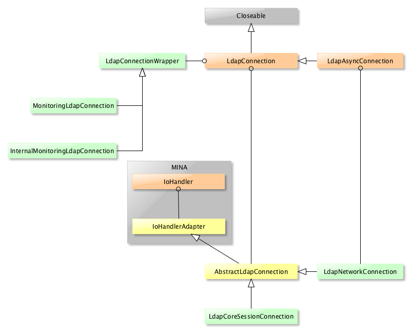
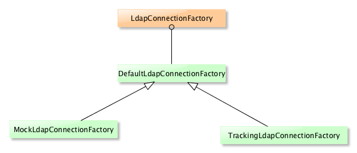

LDAP API
Downloads
Getting Started
Documentation
- Five minute tutorial
- User Guide
- API 1 to 2 migration
- JavaDocs
- JavaDocs 2
- Cross-Reference
- Cross-Reference 2
- Developer Guide
- Internal Guide
Support
Community
About Apache
5 - Network
Content
The Apache LDAP AP is built on top of Apache MINA which is a NIO framework.
As MINA is fully asynchronous, it has some impact on the design of the LDAP API. Basically, we send requests, and we don’t wait for responses, we get informed when the response is there. Most of the time, the API users will want to wait for a response, instead of leveraging the asyncrhonous aspect of the API: this is the reason we have a blocking API, based on the non-blocking implementation. We will explain the whole thing here.
NOTE : LDAP protocol is based on TCP, we are not dealing with UDP at all.
Class hierarchy
The LdapConnection interface and its implementations are the entry point for any code that wants to communicate using the LDAP protocol. There are many flavors, but one usually want to instanciate a LdapNetworkConnection. Her eis the complete class hierarchy:

Creating a new LdapConnection is all about calling the appropriate constructor with the required parameters, or to create a LdapConnectionConfig and call the LdapConnection implementation constructor.
It’s also possible to use a LdapConnectionFactory implementation :

MINA usage
MINA handles all the complexity of managing sockets and transfering messages in and out. An application based on this framework just have to implement a few interfaces :
- IoHandler which is the part of the application that receives or sends messages, and manage the connection to the remote peer
- ProtocolDecoder and ProtoclEncoder which is responsible for encoding a meassage to a byte[] ready to be sent or to produce a message from a received byte[]
- ProtocolCodecFactory which is the factory that instanciates the encoder and decoder
We also have to create a Connector, which is the instance in charge of managing the communication with the remote peer. That implies we properly set the filter chain it uses, especially the SSL/TLS part.
Currently, we have a dedicated *MINA module that covers a part of that, but the Connector creation and initialization is done in the LdapNetworkConnection class - which is a mistake, it should be delegated to a class in the MINA module-.
Initialization
The initialization is done in the LdapnetworkConnection.connect() method :
:::Java
public boolean connect() throws LdapException
{
...
// Create the connector if needed
if ( connector == null )
{
createConnector();
}
and the private createConnector() method does all the work :
:::Java
private void createConnector() throws LdapException
{
// Use only one thread inside the connector
connector = new NioSocketConnector( 1 );
if ( connectionConfig != null )
{
( ( SocketSessionConfig ) connector.getSessionConfig() ).setAll( connectionConfig );
}
else
{
( ( SocketSessionConfig ) connector.getSessionConfig() ).setReuseAddress( true );
}
// Add the codec to the chain
connector.getFilterChain().addLast( "ldapCodec", ldapProtocolFilter );
// If we use SSL, we have to add the SslFilter to the chain
if ( config.isUseSsl() )
{
addSslFilter();
}
// Inject the protocolHandler
connector.setHandler( this );
}
A few things :
- We use one thread as a default to handle the communication with the server, it’s enough as we are only talking to one server anyawy. This is the reason we use ‘1’ as a parameter to the Connector constructor.
- We may have a SocketSessionConfig instance, as soon as one is passed to the LdapNetworkConnection instance before the first call to the connect method is done. By default, we just set the SO_REUSE flag.
- We add one or two filters to the chain : the codec and the SSL filter, if needed. The SSL filter requires that a LdapConnectionConfig instance is passed to the constructor.
- As we can see, the LdapNetwworkConnection class is the IoHandler implementation.
This private class should be moved to another class in the MINA module.
Note : We could share the Connector between many LdapConnections, using less threads.
Example : using a LdapConnectionConfig
Here is an example on how we can create and use a LdapConnectionConfig to set up a secured connection :
:::Java
LdapConnectionConfig sslConfig = new LdapConnectionConfig();
sslConfig.setLdapHost( Network.LOOPBACK_HOSTNAME );
sslConfig.setUseSsl( true );
sslConfig.setLdapPort( getLdapServer().getPortSSL() );
sslConfig.setTrustManagers( new NoVerificationTrustManager() );
sslConfig.setBinaryAttributeDetector( new SchemaBinaryAttributeDetector(
ldapServer.getDirectoryService().getSchemaManager() ) );
try ( LdapNetworkConnection connection = new LdapNetworkConnection( sslConfig ) )
{
connection.bind( "uid=admin,ou=system", "secret" );
...
MINA Events processing
There are many aspects we need to consider when it comes to use MINA :
- events processing
- sending a message
- receiving a message
- encoding/decoding
Events processing
MINA is an asynchronous framework, which means it’s event based : you will receive events when something ‘happens’ (like, a message is received, etc). The events have to be processed by the LDAP API, and the IoHandler interface is listing all the events we have to process. Here they are :
- messageReceived : When a message has been fully received from the remote peer
- messageSent : When a message has been fully sent to the remote peer
- exceptionCaught : If we git an exception from the network layer
- inputClosed : When the Input part of a TCP connection has been closed
- sessionClosed : When a Session is closed
- sessionCreated : When a Session is created
- sessionIdle : When a Session is idle
- sessionOpened : When a Session is opened
- event : when the session receives a specific event
The session is created when you connect for the first time, it’s atcive until it’s closed. We are talking about a TCP session, not a LDAP session.
So the LdapNetworkConnection class must implement those methods.
Regarding the messageReceived/messageSent methods, it’s important to know that we are talking about FULL LDAP messages, even if TCP does not guarantee that messages can’t be fragmented : MINA deal with fragmentation.
Actually, we only implement the messageReceived, exceptionCaught, inputClose, sessionCreated and sessionClosed methods, the other are handled by the IoHandlerAdpater methods (which does nothing with it).
Sending a message
There are two modes : Synchronous and Asyncrhonous. The methods are respectively described in the LdapConnection interface and LdapAsyncConnection interface. Actually, synchronous methods are calling asynchronous methods, which returns a Future :
:::Java
/**
* {@inheritDoc}
*/
@Override
public AddResponse add( AddRequest addRequest ) throws LdapException
{
...
AddFuture addFuture = addAsync( addRequest );
// Get the result from the future
try
{
// Read the response, waiting for it if not available immediately
// Get the response, blocking
AddResponse addResponse = addFuture.get( timeout, TimeUnit.MILLISECONDS );
if ( addResponse == null )
{
// We didn't received anything : this is an error
LOG.error( "Add failed : timeout occurred" );
throw new LdapException( TIME_OUT_ERROR );
}
if ( addResponse.getLdapResult().getResultCode() == ResultCodeEnum.SUCCESS )
{
// Everything is fine, return the response
LOG.debug( "Add successful : {}", addResponse );
}
else
{
// We have had an error
LOG.debug( "Add failed : {}", addResponse );
}
return addResponse;
}
catch ( Exception ie )
{
// Catch all other exceptions
// Send an abandon request
if ( !addFuture.isCancelled() )
{
abandon( addRequest.getMessageId() );
}
throw new LdapException( NO_RESPONSE_ERROR, ie );
}
}
You can see we wait until the timeout expired, or until we got the response, calling the addAsync method, getting back a Future and waiting on it.
This method take a AddRequest but we have other simpler flavors (see the LDAP API documentation).
AddResponse ldapConnection.add( AddResquest )
|
+-- AddFuture addAsync( AddRequest )
| |
| +-- connect()
| | |
| | +-- createConnector()
| | | |
| | | +-- new NioSocketConnector()
| | | |
| | | +-- NioSocketConnector.getFilterChain().addLast( "ldapCodec", ldapProtocolFilter );
| | | |
| | | [+-- addSslFilter()]
| | | |
| | | +-- NioSocketConnector.setHandler( this )
| | |
| | +-- IoConnector.connect( address )
| |
| +-- checkSession()
| |
| +-- new AddFuture( LdapConnection, ID )
| |
| +-- addToFutureMap( ID, AddFuture )
| |
| +-- writeRequest( AddRequest )
| |
| +-- WriteFuture IoSession.write( request )
| |
| +-- WriteFuture.awaitUninterruptibly( 100 )
|
+-- AddFuture.get()
Here, we first create a connection if we don’t have one yet, and then we try to write the message to the remote server, and wait for the message to be sent. That means sending message is synchronous, while receiving is aysnchronous by default. (NOTE : This may change in the next version.)
Once the request has been written, we do a get on the returned Future. Either we get an AddResponse, or an error/timeout.
Receiving a message
Once the IoSession.write() method is called, we can assume the message has been sent to the remote server (sort of). The response will come as an event : messageReceived(), which is implemented in LdapNetworkConnection.
Each LDAP message has a unique ID, and every sent message is associated with a Future. When the message is sent, we store a tuple <ID, Future> in a map, so when the response arrives, we just have to pull the Future from the map using teh message ID. This is what we do in the messageReceived() implementation. The response is enqueued in the Future (we may have more than one, typically for Search operations).
Encoding/decoding
Messages are encoded and decoded when we send or receive them. This is done by MINA, using a callback in the LDAP API. That means we configured MINA to process LDAP messages.
The codec is inserted in MINA chain while connecting :
:::Java
/** The Ldap codec protocol filter */
private IoFilter ldapProtocolFilter = new ProtocolCodecFilter( codec.getProtocolCodecFactory() );
private void createConnector() throws LdapException
{
...
// Add the codec to the chain
connector.getFilterChain().addLast( "ldapCodec", ldapProtocolFilter );
So the ProtocolCodecFilter class is responsible for initializing the codec (it’s a MINA class), and here, we use a factory to inject the encoder and decoder instances. This factory is LdapProtocolCodecFactory.
This class, which is part of the mina module, instanciate an instance of the statefull LDAP encoder and decoder classes, LdapProtocolEncoder and LdapProtocolDecoder, which also belongs to the mina module.
What is important to remember is that TCP is not dealing with LDAP messages, but with bytes. The decoder must be able to start decoding a message, even if it does not have all the necessary bytes to decode a full LDAP message. It should also be able to decode more than one message if the bytes it received contains more than the bytes necessary to hold a message. All of this is handle by MINA anyway, but we must provide a way for the decoder to keep the current state. Check the codec page for more explainations.
SSL Handling
LDAPS is a LDAP connection secured with SSL/TLS (we still use SSL as a name, when actually TLS is used, as SSL is not anymore safe. The currrent version of the protocol is TLS V.12, but TLS v1.3 has just been released.)
A LDAPS connection is a standard TCP connection which has a secured layer installed before it can be used.
StartTLS Handling
The StartTLS extended operation is a bit specific, as it is set over an existing connection, and based on a LDAP message being sent to the remote server. The big plus is that it uses the standard LDAP port, so there is no need to declare a dedicated port for a secured connection (aka LDAPS).
The logic is the following :
::: text
- The client sends a **startTLS** extended operation to the server - assuming the server supports it -
- The server setup a **TLS** 'listener', configure it, and send back an extended response to inform the client it is ready to proceed further. At this point, the server will not proceed any non-handshake messages received for this **LDAP** session, not will it send any response (they will be enqueued)
- On reception of this response, the client will add the **SslFilter** into the MINA network chain, configure it, and start the handshake (by sending a **CLIENT HELLO** message). No further message can be sent for this session, beside the handsake messages (they will be enqueued and delivered when teh handshake has been completed successfully)
- The handshake is performed: messages and responses are send and received, up to teh completion point.
- When the handshake is completed, the **SslFilter** inform the connection that it's done by 'sending' (locally) a **SESSION_SECURED* message
- enqueued messages are flushed on bith the client and server. We are done, the session is secured.
There are many aspect that are tricky here. One of them is to be sure we don’t send messages to the remote peer while processing the handshake
On the server :
Init : the SSLContext is configured to TLS, regardless of the configuration…
SslHandler.handleExtendedOperation new SslFilter() DefaultIoFilterChain.addFirst() DefaultIoFilterChain.register() SslFilter.onPreAdd() new SslHandler() SslHandler.init() SSLContext.createSSLEngine() [SSLEngine.beginHandshake()] «<—- SslFilter.onPostAdd() write response
On the client :
addSslFilter SSLContext.getInstance() new SslFilter() DefaultIoFilterChain.addFirst() DefaultIoFilterChain.register() SslFilter.onPreAdd() new SslHandler() SslHandler.init() SSLContext.createSSLEngine() SSLEngine.beginHandshake() «<—- SslFilter.onPostAdd()